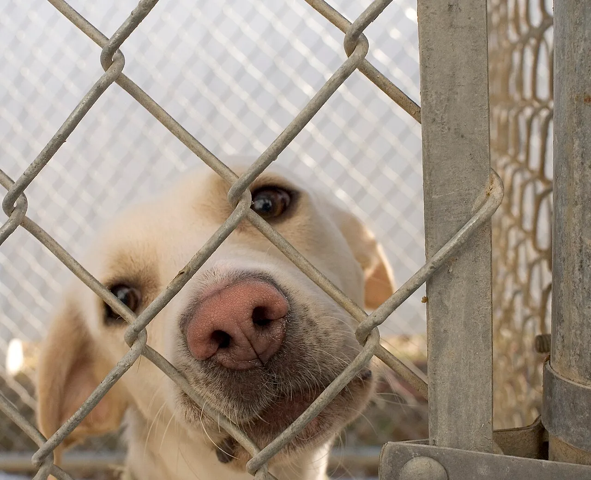
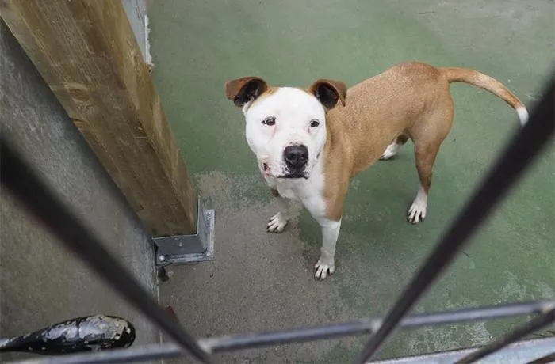
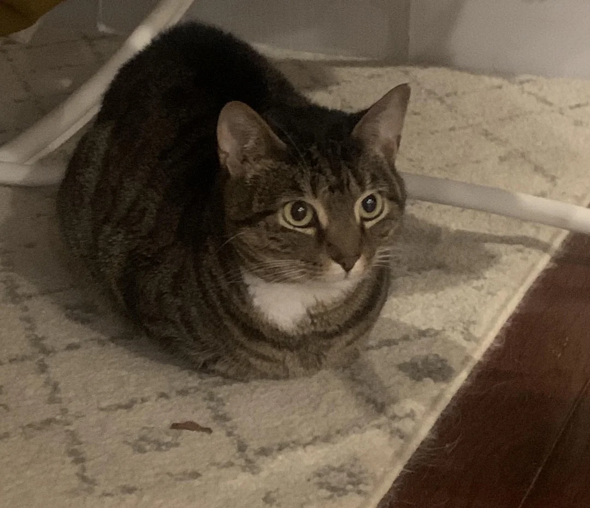

Luna

Una perrita juguetona que ama correr en el parque.

Una perrita juguetona que ama correr en el parque.

Gatito muy tranquilo, ideal para tardes de lectura.

Un perro rescatado que busca un hogar lleno de amor.

Gata curiosa que adora explorar cada rincón de la casa.